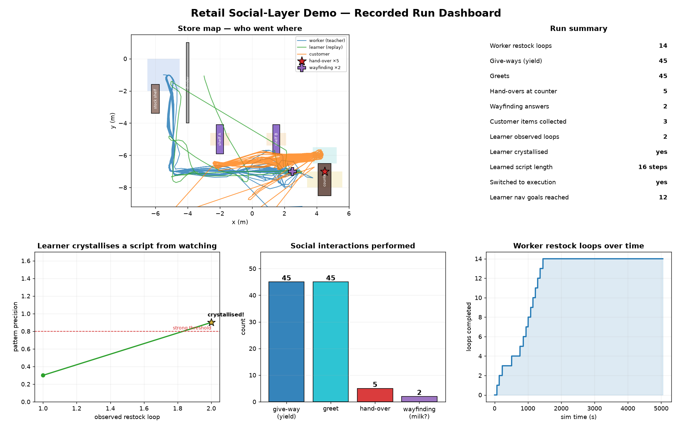

A TIAGo worker restocks a store while socially interacting with a
shopper; a second TIAGo learns the worker's routine purely by watching, then replays it.
14
worker restock loops
5
hand-overs at counter
2
wayfinding answers
45
give-ways to shoppers
2
loops the learner observed
yes
script crystallised
16
learned script steps
3
customer items collected

What you are looking at
Store map — routes of the worker (blue), the learner replaying the
learned route (green) and the customer (orange). Stars mark where the
hand-over (counter) and wayfinding ("where's the milk?") happen.
Crystallisation curve — the learner's best pattern precision climbs
with each observed restock loop; once it passes the strong threshold the
routine crystallises into a script the learner then executes.
Interaction tally — the four social acts the worker performs:
give-way, greet, hand-over, and wayfinding.
Loops over time — the worker keeps restocking steadily.